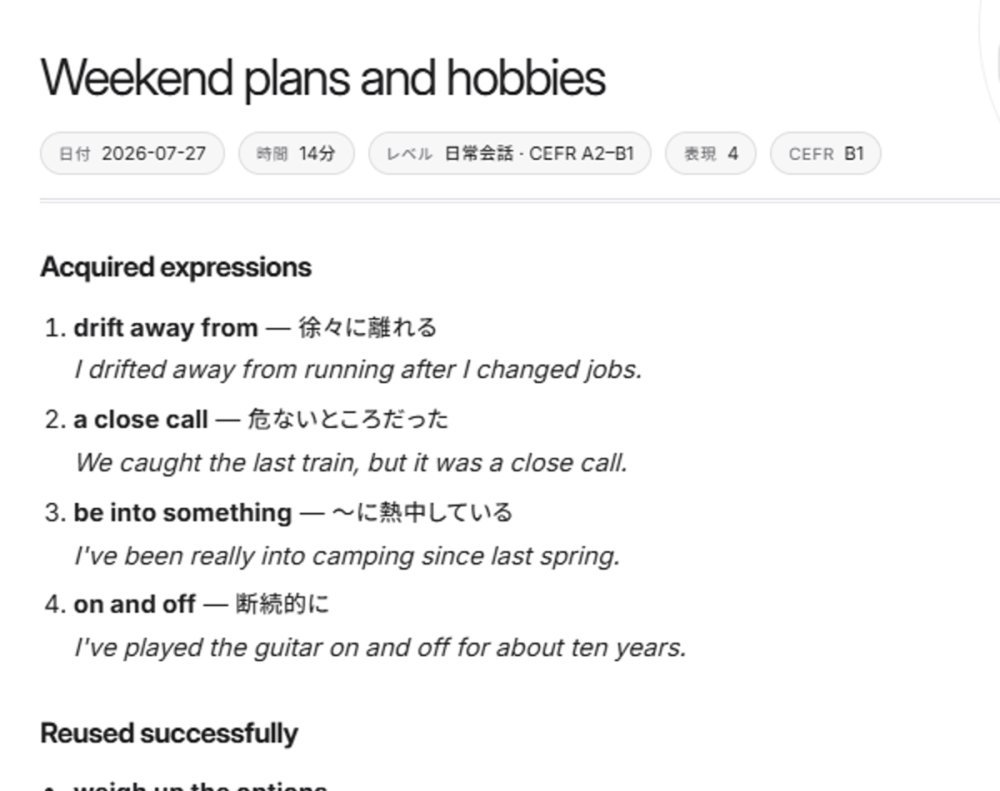
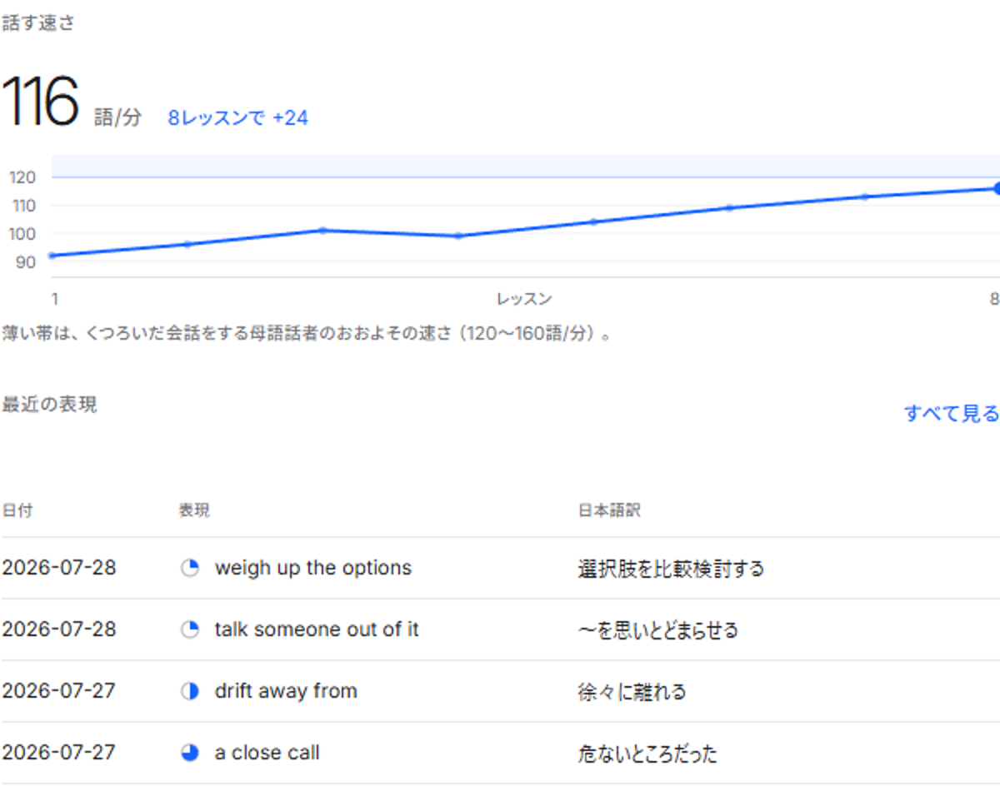
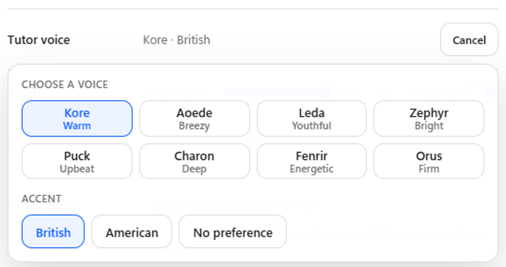
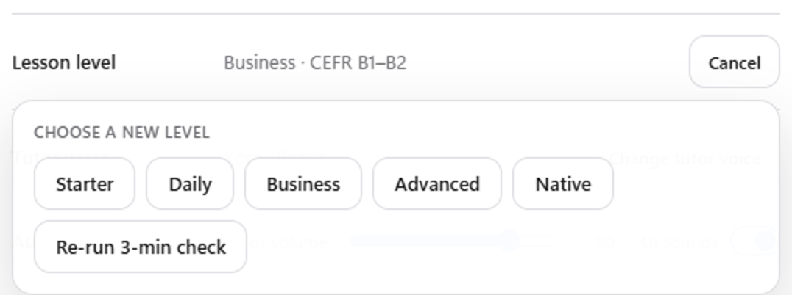

いまのレベルに合う15分
最初に3分話すとCEFRレベルを自動で推定。チューターの話す速さと話題があなたに合わせて変わります。
ベータ準備中
予約なし。月額なし。キーボードも使わない。PCを開いて、声で話すだけ。
最初に3分話すとCEFRレベルを自動で推定。チューターの話す速さと話題があなたに合わせて変わります。

出てきた表現とその日の英語レベルをまとめたノートを毎回自動で生成。日本語訳と例文、次回の練習内容つき。

話す速さの推移と育っていく表現、続いた日数。積み上がりはすべて手元のPCに残ります。
初回セットアップが取得手順を1画面ずつ案内します。Google AI Studioで無料発行できます。
少し話すだけでいまのレベル（CEFR）を自動判定します。5段階から自分で選んでも構いません。
あとは開いて話すだけ。終わると自動でノートが保存され、次のレッスンに引き継がれます。
どちらも良い選択肢です。違いを正直に書きます。
汎用のAIチャット（ChatGPTなど）と比べて
オンライン英会話と比べて
QUARTERはご自身のGemini APIキーで動きます（BYOK）。
② Gemini 利用料
従量Googleへ直接
あなたのGoogleアカウントへ直接請求され、QUARTERの価格には含まれません。無料枠から試せて、1日15分なら月あたり数百円程度のオーダーになる見込みですが、あくまで目安です。
ノートPCの内蔵マイクでも動きます。周囲の音が入りやすい場所では有線ヘッドセットのほうが安定します。
8種類の声から選べて、イギリス英語とアメリカ英語のアクセントも切り替えられます。設定画面からいつでも変更できます。

5段階のプリセットからいつでも選び直せます。3分のスキルチェックをやり直せば、いまの実力に合わせて測り直せます。

2026年8月1日現在、レッスンに使うGemini Live APIの音声入出力には無料枠があります。1日に使える量の上限はGoogleアカウントごとに決まり、AI Studioの画面でいつでも確認できます。無料枠を超えて課金を有効にした場合も、公式単価からの試算で1レッスン（15分）あたり数十円です。単価と無料枠の内容は変わることがあります。
QUARTERは買い切りのため、アプリから追加請求は発生しません。Geminiの利用料はあなたのGoogleアカウントに直接発生します。
レッスンノートはドキュメントフォルダのQUARTERにMarkdownで保存され、APIキーはOSの安全な保存領域に保管されます。保存先をObsidianのVaultへ変えることもできます。
購入前に3レッスンの無料体験で試せます。デジタル製品の性質上、購入後の返金には原則対応しません。不具合で利用できない場合は個別に対応します。